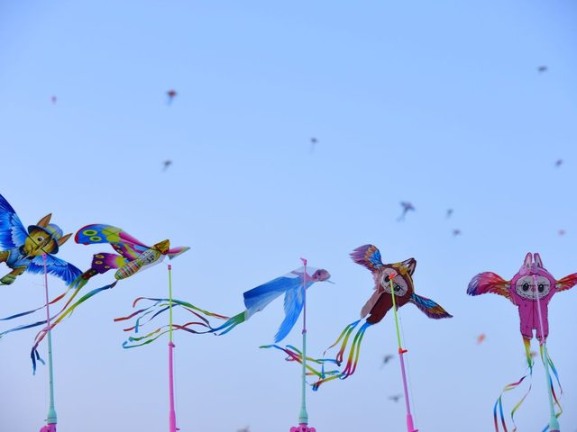
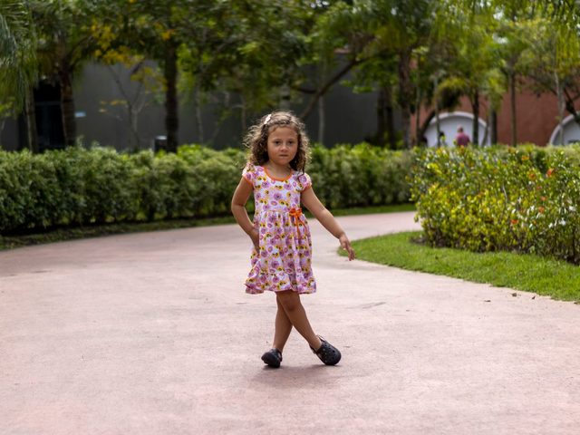
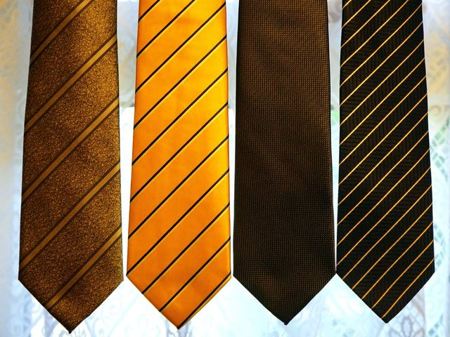

VOCABULARY · LALA WORD UNIT 9
A New Way to Get Food Fast．一字多義（九）
fly 是飛，也是「蒼蠅」；bank 是銀行，也是「河岸」。這個單元有 8 個主題單字、15 個更多單字，再整理 sell／sale，和都跟「花費」有關的 cost／spend／take／pay。
共 23 個單字．點 🔊 聽發音

1flyv. / n.
飛；放（風箏）；搭飛機；開飛機；（時間）飛逝；蒼蠅
fly - flew - flown - flying；複數 flies
- 1v.飛；放（風箏） fly a kite 放風箏Let's fly a kite in the park.我們去公園放風箏吧。
- 2v.搭飛機；開飛機We flew to Japan last summer.我們去年夏天搭飛機去日本。
- 3v.（時間）飛逝Time flies!時間過得真快！
- 4n.蒼蠅There is a fly on my cake!我的蛋糕上有一隻蒼蠅！
2straightadv. / adj.
直接地；立刻；連續地；清楚地；挺直地；直的；誠實的；坦白的
straight - straighter - straightest
- 1adv.直接地；立刻Go straight home after school.放學後直接回家。
- 2adv.連續地It rained for five days straight.雨連續下了五天。
- 3adv.清楚地I'm so sleepy that I can't think straight.我睏到沒辦法好好思考。
- 4adv.挺直地Sit up straight, please.請坐直。
- 5adj.直的She has long straight hair.她有一頭長直髮。
- 6adj.誠實的；坦白的Please give me a straight answer.請坦白回答我。

3cutv. / n.
減少；切；剪；插嘴；插隊；傷口；剪髮；剪裁
cut - cut - cut - cutting
- 1v.減少 cut down on 減少You should cut down on sweets.你應該少吃甜食。
- 2v.切；剪Cut the apple into four pieces.把蘋果切成四塊。
- 3v.插嘴；插隊 cut in line 插隊Don't cut in line!不要插隊！
- 4n.傷口I got a cut on my finger.我的手指割傷了。
- 5n.剪髮；剪裁I like your new cut!我喜歡你的新髮型！
4shipv. / n.
運送；大船
ship - shipped - shipped - shipping
- 1v.運送The shop ships books all over Taiwan.這家店把書寄送到全臺灣。
- 2n.大船 by ship 搭船The ship sailed across the ocean.那艘船橫渡大海。

5costn. / v.
成本；費用；代價；花費（金錢）；使喪失
cost - cost - cost - costing
- 1n.成本；費用The cost of food is going up.食物的成本在上漲。
- 2n.代價 at all costs 不惜任何代價He wanted to win at all costs.他不惜一切代價想要贏。
- 3v.花費（金錢） cost an arm and a leg 非常貴This shirt cost me 500 dollars.這件襯衫花了我五百元。
- 4v.使喪失One mistake cost us the game.一個失誤讓我們輸了比賽。

6pricen. / v.
價格；代價；給…定價
price - priced - priced - pricing
- 1n.價格The price of this bag is too high.這個包包的價格太高了。
- 2n.代價 pay a high price 付出很大代價He paid a high price for his mistake.他為自己的錯付出很大的代價。
- 3v.給…定價The new phone is priced at 30,000 dollars.新手機定價三萬元。

7blockv. / n.
擋住；堵塞；阻擋；街區；塊；積木
block - blocked - blocked - blocking
- 1v.擋住；堵塞 block one's view 擋住視線A big truck is blocking the road.一輛大卡車擋住了路。
- 2n.阻擋He made a great block in the game.他在比賽中做了一個漂亮的阻擋。
- 3n.街區The bookstore is two blocks away.書店離這裡兩個街區。
- 4n.塊；積木 a block of ice 一塊冰The kids built a tower with blocks.孩子們用積木蓋了一座塔。
8willaux. / n.
將要（未來式）；願意；意志；遺囑
- 1aux.將要（未來式）It will rain tomorrow.明天會下雨。
- 2aux.願意Will you help me?你願意幫我嗎？
- 3n.意志She has a strong will.她的意志很堅強。
- 4n.遺囑The old man left his house to his son in his will.那位老人在遺囑中把房子留給兒子。
9alongprep. / adv.
沿著；一起
- 1prep.沿著We walked along the river.我們沿著河邊散步。
- 2adv.一起 bring… along 帶…一起；come along 一起來；get along 相處融洽Can I bring my sister along?我可以帶我妹妹一起去嗎？

10askv.
問；要求；請求
ask - asked - asked - asking
- 1v.問Can I ask you a question?我可以問你一個問題嗎？
- 2v.要求；請求 ask + 人 + to V 要求某人做；ask for 要求；ask for help 求助Mom asked me to clean my room.媽媽要我整理房間。
11bankn.
銀行；河岸
複數 banks
- 1n.銀行Dad went to the bank to get some money.爸爸去銀行領錢。
- 2n.河岸We had a picnic on the river bank.我們在河岸邊野餐。

12biken. / v.
腳踏車；騎腳踏車
bike - biked - biked - biking
- 1n.腳踏車I ride my bike to school.我騎腳踏車上學。
- 2v.騎腳踏車We biked along the beach.我們沿著海邊騎腳踏車。

13coatn. / v.
大衣；外套；（動物的）毛；覆蓋；裹上
coat - coated - coated - coating
- 1n.大衣；外套 raincoat 雨衣Put on your coat. It's cold outside.穿上外套，外面很冷。
- 2n.（動物的）毛The dog has a soft white coat.這隻狗有一身柔軟的白毛。
- 3v.覆蓋；裹上The cake is coated with chocolate.這個蛋糕外面裹了一層巧克力。

14dressn. / v.
洋裝；服裝；穿衣服；打扮；（給沙拉）調味
dress - dressed - dressed - dressing
- 1n.洋裝She wore a pink dress to the party.她穿粉紅色洋裝去參加派對。
- 2n.服裝 dress code 服裝規定Is there a dress code for the party?這個派對有服裝規定嗎？
- 3v.穿衣服 get dressed 穿好衣服Get dressed quickly. We're late!快穿好衣服，我們遲到了！
- 4v.打扮 dress up as 打扮成He dressed up as a pirate for Halloween.他萬聖節打扮成海盜。
- 5v.（給沙拉）調味Dress the salad with some olive oil.用一點橄欖油拌沙拉。

15fastadj. / adv. / v.
快的；快速地；牢牢地；禁食
fast - faster - fastest；fast - fasted - fasted - fasting
- 1adj.快的A cheetah is a very fast animal.獵豹是跑得非常快的動物。
- 2adv.快速地Don't eat so fast.別吃那麼快。
- 3adv.牢牢地 fast asleep 熟睡The baby is fast asleep.寶寶睡得很熟。
- 4v.禁食You need to fast before the blood test.抽血檢查前你需要禁食。

16footn.
腳；英尺
複數 feet
- 1n.腳 on foot 走路；get cold feet 臨陣退縮I hurt my foot when I played soccer.我踢足球時傷了腳。
- 2n.英尺The tree is twenty feet tall.這棵樹有二十英尺高。

17groundn. / v.
地面；土地；土壤；（特殊用途的）場地；禁止外出；停飛
ground - grounded - grounded - grounding
- 1n.地面The apple fell to the ground.蘋果掉到地上。
- 2n.土地；土壤The ground is too dry for plants.土地太乾，植物長不了。
- 3n.（特殊用途的）場地 playground 操場；遊樂場The kids are on the playground.孩子們在遊樂場。
- 4v.禁止外出；停飛My parents grounded me for a week.我爸媽罰我一個星期不准出門。

18hitv. / n.
打；撞；襲擊（災害）；暢銷作品；熱門歌曲；點擊數
hit - hit - hit - hitting
- 1v.打；撞He hit the ball very hard.他用力打球。
- 2v.襲擊（災害）A typhoon hit Taiwan last week.上週颱風侵襲臺灣。
- 3n.暢銷作品；熱門歌曲This song is a big hit.這首歌非常紅。
- 4n.點擊數The video got a million hits.這支影片有一百萬次點擊。

19hurtv. / adj.
傷害；痛；受傷的
hurt - hurt - hurt - hurting
- 1v.傷害I hurt my arm when I fell.我跌倒時傷了手臂。
- 2v.痛My head hurts.我頭痛。
- 3adj.受傷的 get hurt 受傷Two people got hurt in the accident.這起意外有兩人受傷。

20pairn. / v.
一對；一雙；一組；兩人一組；搭配
pair - paired - paired - pairing
- 1n.一對；一雙 a pair of 一雙；一副I need a new pair of shoes.我需要一雙新鞋。
- 2n.一組；兩人一組 in pairs 兩人一組Work in pairs, please.請兩人一組。
- 3v.搭配Pair the cheese with some fruit.起司配一點水果。
21payv. / n.
付錢；注意（pay attention）；償還（pay back）；薪水
pay - paid - paid - paying
- 1v.付錢 pay for 付…的錢；pay in cash 付現Can I pay by credit card?我可以刷卡嗎？
- 2v.注意（pay attention） pay attention to 注意Pay attention to the teacher.注意聽老師說話。
- 3v.償還（pay back） pay back 還錢I'll pay you back tomorrow.我明天還你錢。
- 4n.薪水The job is hard, but the pay is good.這份工作很辛苦，但薪水不錯。

22surfv. / n.
衝浪；（在網路上）瀏覽；海浪；浪花
surf - surfed - surfed - surfing
- 1v.衝浪We went surfing in Yilan.我們去宜蘭衝浪。
- 2v.（在網路上）瀏覽 surf the internet 上網He surfs the internet for hours.他上網好幾個小時。
- 3n.海浪；浪花The surf is big today.今天浪很大。

23tiev. / n.
綁；打結；領帶；關聯；平手
tie - tied - tied - tying
- 1v.綁；打結Can you tie your shoes?你會綁鞋帶嗎？
- 2n.領帶Dad wears a tie to work.爸爸打領帶去上班。
- 3n.關聯There is a close tie between sleep and health.睡眠和健康有密切的關係。
- 4n.平手The game ended in a tie.比賽以平手結束。
FOCUS
易混淆字：sell 和 sale
| 單字 | 用法 | 例句 |
|---|---|---|
| sell | （動詞）賣：sell - sold - sold | They sell fresh fruit here. |
| sale | （名詞）出售；拍賣：on sale 特價；for sale 出售中 | These shoes are on sale. |
FOCUS
易混淆字：cost／spend／take／pay
| 單字 | 句型 | 例句 |
|---|---|---|
| cost | 「東西」當主詞：物 + cost + 人 + 錢 | The book cost me 300 dollars. |
| spend | 「人」當主詞：人 + spend + 錢／時間 + on 物／V-ing | I spent two hours doing homework. |
| take | 「事情」花時間：It takes + 人 + 時間 + to V | It takes me 20 minutes to walk to school. |
| pay | 「人」付錢：人 + pay + 錢 + for 物 | She paid 50 dollars for the cake. |
問價錢：How much does it cost?；問時間：How long does it take?
FOCUS
一字多義：最常見 vs. 容易忽略的意思
| 單字 | 最常見的意思 | 容易忽略的意思 |
|---|---|---|
| fly | 飛 | 蒼蠅 |
| bank | 銀行 | 河岸 |
| will | 將要 | 意志；遺囑 |
| block | 擋住 | 街區；積木 |
| coat | 外套 | 動物的毛；裹上 |
| fast | 快的 | 禁食；fast asleep 熟睡 |
| foot | 腳 | 英尺 |
| ground | 地面 | 禁足；停飛 |
| hit | 打 | 熱門歌曲 |
| tie | 領帶 | 平手 |